This webpage provides details on the following subjects.
| Collinear sets | Hit popup | 3-chr conserved |
Collinear sets
| Rules | Advanced vs Simple | Tedious details |
Either using the Hit Filter, or right click in the hit region, set the highlighting for Collinear Sets.
As shown below, the number of highlighted collinear hits and sets will be shown in
the Information box (CoSets is the abbreviation for Collinear Sets).
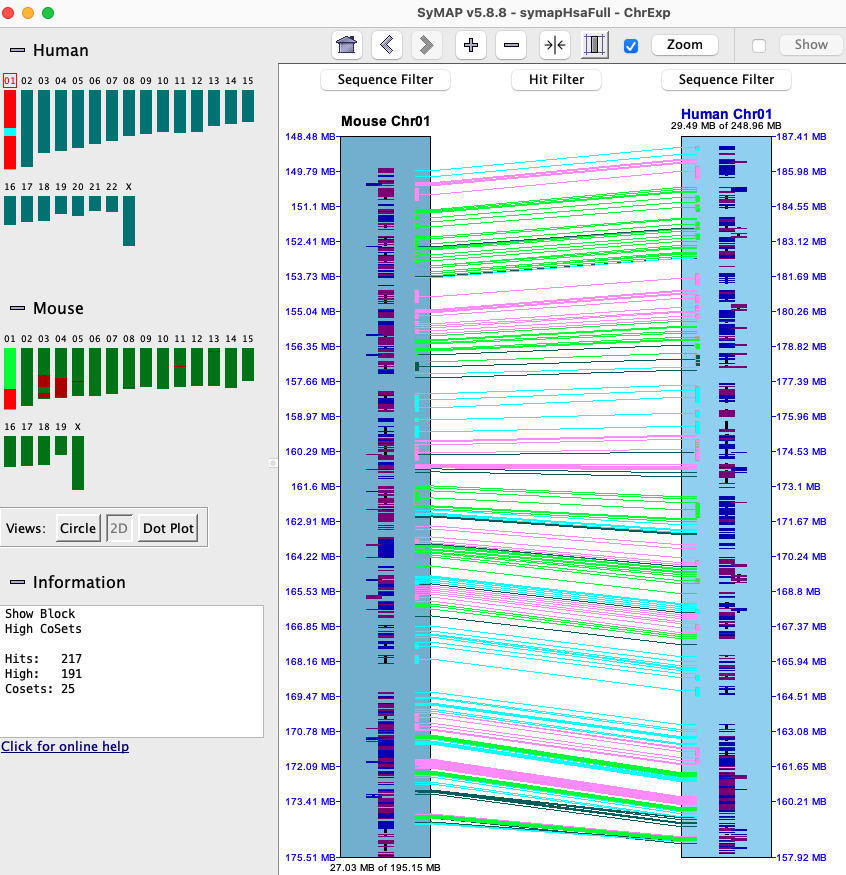
Rules
- To be a collinear set, all hits must be in ascending or descending order and align to sequential genes.
- All hits for a collinear set must be inverted (strands +/- or -/+) or non-inverted (strands +/+ or -/-).
- If two genes from species #1 align to one gene in species #2, the two hits will not be in the same collinear set.
- The Collinear sets may have been computed with the Advanced or Simple algorithm. The Summary will state Collinear Simple at the bottom if it was used. Advanced tries to determine collinearity across overlapping genes, whereas Simple does not. Some examples are shown below.
|
In the image on the right, two different sets are shown where the pink highlighted hits is the 1st set,
green is the 2nd. The sets were broken by an extra gene on Human Chr01.
There are 3 colors used for sets which are the Color Wheel Hit Highlight1, Highlight2 and the Track Highlight colors; the Track color will not change for hits. A collinear set either has all hits/genes to the same strand (+/+, -/-) or different (+/-, -/+). In the image on the right, all genes in both sets are on different strands. The collinear set algorithm does not consider the amount of overlap of the hit to a gene, or the similarity of the hit sequences. Sometimes a hit looks like it overlaps a gene, but the gene is actually in the gap of a clustered hit, so is not a gene hit. |
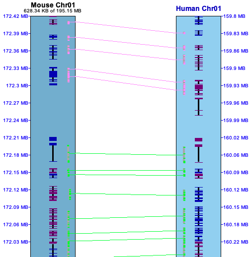 |
The image below shows a collinear set of 4 genes and 6 brown hit-wires that are not part of the set. The following explains them, using the symbols g0 (hit 0 genes), g1 (hit 1 gene), g2 (hit paired genes).
|
Sometimes two genes look as one (e.g. gene 791 and 792 on Chr01 below), so the Sequence Filter Gene Delimiter option can be used to delimit the genes with a black bar.
|
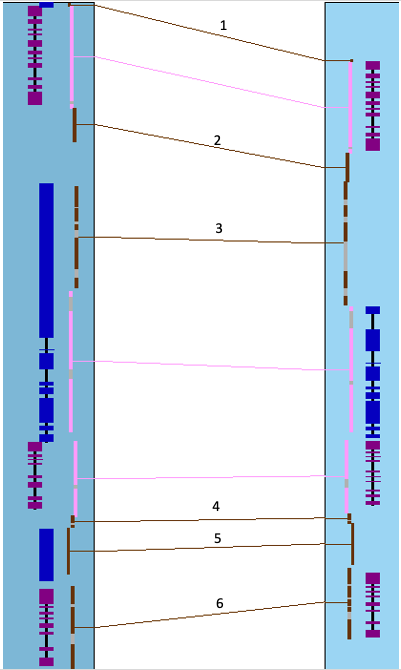 |


Advanced vs Simple
Advanced compared to Simple:
- It is better at including overlapping genes in a single CoSet.
It is better at including embedded genes, but it also sometimes ignore embedded genes.
This results in longer sets. - It removes 2-hit CoSets if:
(1) Two CoSets have the same genes (generally, one is inverted and the other is not).
(2) One hit is to a non-overlap and the other is to an embedded gene.
This results in fewer 2-hit CoSets. - The Advanced improvements are most obvious with mammalian genomes that have very complex overlapping and embedded genes.
Simple algorithm:
- Sets are often broken into multiple CoSets due to overlapping genes.
Example 1. The following shows the results of the two algorithms in regions of embedded genes. The Advanced
will often ignore an embedded gene, as shown on the left below.
| Advanced | Simple |
|
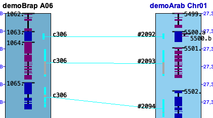 |
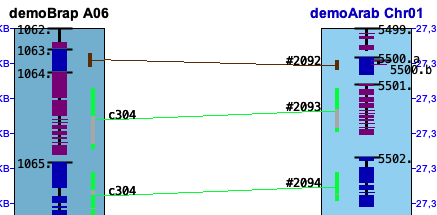 |


Example 2. The Advanced will create collinear sets where one side has them embedded and the other side does not
(e.g. c36 set). Also, c37 set has an extra gene because it will pair with a gene that has embedded genes.
| Advanced | Simple |
|
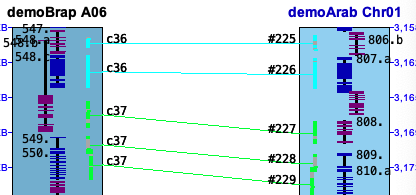 |
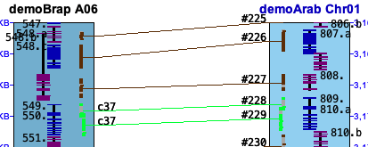 |


Example 3. The Advanced does not let a 2-hit collinear set share all genes with another set (it is removed).
| Advanced | Simple |
|
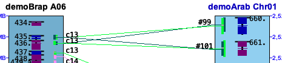 |
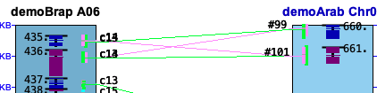 |


Tedious details of where it looks like the results are wrong:
- A tiny gene without a hit can separate two collinear sets; it is necessary to really zoom in to see these.
- Two genes that are close but do not overlap can appear as one.
Use the Delimit genes and Gene# all filters to distinguish all genes. - A hit may not be shown if it is not in a collinear set or block, and either of these filters are set.
Use the Hit =2 genes (g2) filter to view all valid hits. - A tiny gene can have an alignment to a large gene; these probably are incorrectly in the collinear set.
- A inverted hit can be within a non-inverted collinear set.
- With Cluster Algo1 (see Terminology), the hit orientations may be different than the orientations of homologous genes.
Hit popup | Go to top |
| Default view | Merge | Order |
Default view
- Both lists are sorted by start coordinate.
- The # column in the two tables align to each, e.g. the rows #2 align to each other.
- The project Directory name that is alphabetically lower (e.g. Arab<Cabb) is the query and the other is the target. The query is numbered 1-N; the target is ordered to match the query.
- Two subhits may overlap (Gap<=0) on one chromosome but not the other.
Merge
|
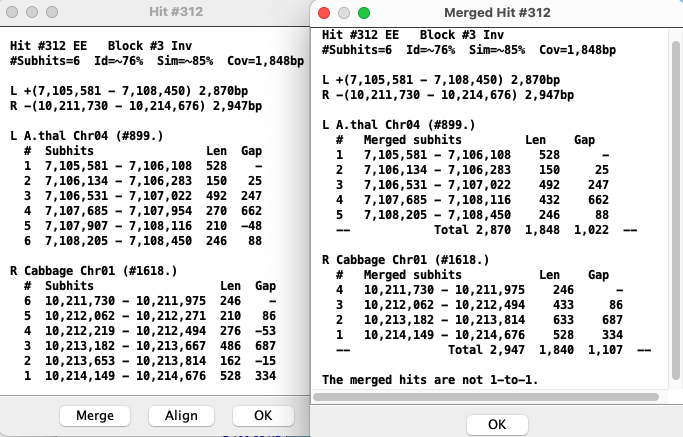 | In the Merged view,
hits with Gap<=0 are merged with the hit they overlap with.
The numbered hits are no longer 1-to-1, i.e. they do not necessarily align to each other like they do in the un-merged view. Totals are provided for the Len and Gap. The Merged view corresponds better to the visual view on the 2D track. The existence of the Merge button is a quick indication that there are overlapping hits. |

Order
|
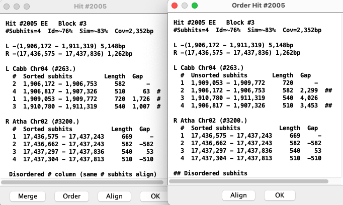 |
As stated above, each numbered subhit corresponds to the same number in the opposite list,
e.g. the two #1 subhit aligns. An # on the far right implies that the order numbers are not sequential.
The Order option produces another popup where the target list is sorted by the # column, and the coordinates are no longer sorted. The existence of the Order button is a quick indication that there are disordered subhits. |

3-chr conserved
| Chromosome Explorer | Queries |
Chromosome Explorer

|

|
The 2D can show a 3-track view, as illustrated on the upper right and discussed below.
2D: The Sequence Filters for the reference track will have an extra section of filters as shown below.
|

|
The g2 implies the hit has a gene on both ends, and the x2 indicates it exists for both sets of chromosome pairs, the x1 indicates it exists for just one. When either g2x2 or g2x1 is selected, this algorithm is run to compute the values; it is only computed on the visible set.
There are two issues confusing the results:
- One side g2 filter:
- The algorithm runs on the set of filtered hits. A g2 hit to a reference gene may be filtered in one chr-pair and not the other, making it appear to be a g1 hit.
- In this case, the filtered hit will be forced displayed using the Highlight2 color (default pink).
- For example: the lower middle image where the arrow is pointing.
- If both sides are filtered, neither will be shown.
- g1 possible g2:
- Both chr-pairs can have a hit to the same reference gene, where one chr-pair has a g2 hit-wire and the other has a g1 (but a possible g2 if it is missing the gene annotation).
- In this case, the g1 hit-wire will be displayed in red.
- For example: the lower right image where the arrow is pointing.
- If the g2x1 hit is filtered, the adjacent g1 hit-wire will not be highlighted red.

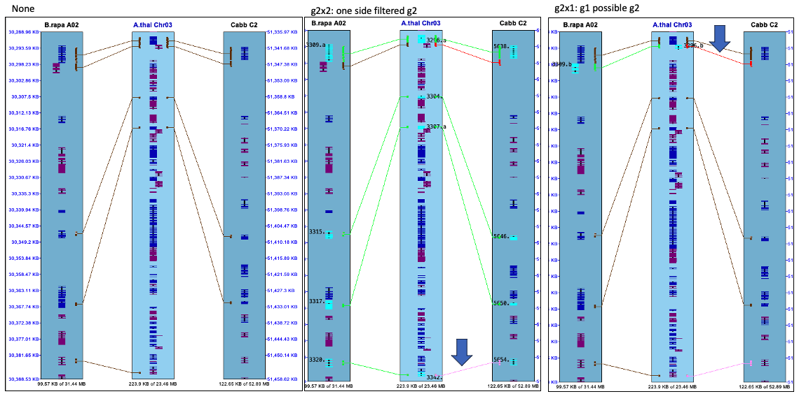
The Sequence Filter of Show Gene# with Hit is used in the above display.
Caveats of display: Nothing is refreshed or recalculated!
- Suggestion: Set the filters from the "full sequence" view, then you can zoom in and back out and the highlight will remain.
- If the highlighting looks wrong after zooming, open Sequence Filter, click None and re-click g2x2 or g2x1.
Caveats of algorithm:
- For g2x2, say it shows genes A-B-C are conserved. The algorithm only checks the A-B hit and B-C hits exist, but does not check the A-C hit.
- There may be different numbers of highlighted genes on the different tracks or hit-wires between tracks. This is because multiple hits can align to a gene, and one gene can align to two different opposite genes.
- When there are overlapping genes, a hit is assigned to just one of them, which causes some conserved genes to have incorrect pairing.
- There are occasional tiny hits that just barely overlap genes; the current algorithm marks them as conserved genes. Also, the hits may align strictly in introns (especially for the long introns of mammalian genomes); the current algorithm marks these as conserved.
Queries
→ For a query result, Report is only way to view more than two species in a query row.→ As shown here, it is possible to bring up the 2D display with 3 chromosomes from the query table.
|
Select two rows with the following requirements:
(1) Each row must have two genes.
(2) There must be a shared gene.
Different species
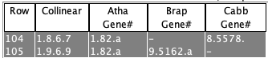 Select View 2D with either the Region and Collinear options. The image on the right used the Collinear options. Same species
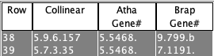 Atha will be the reference since Gene# 5468 is listed in both rows, and Brap chromosomes 7 and 9 will be on its left and right (this 2D display is not shown). | 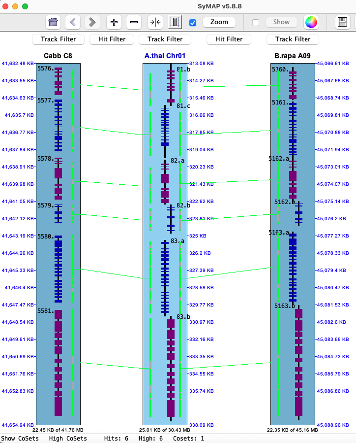 |


| Go to top |
Email Comments To: cas1@arizona.edu